Internal review board — not a site page
The client delivered the product-photo folders on 07-30. Below: a proposed primary photo for each of the twelve home-page circles, alternates to swap in, the delivered categories that don't map to the current home grid, and the shop "By event" line icons with proposed refinements. Nothing on the live home page has been changed — pick here first.
As the home page will read
Point and pick
From Speciality Linens "In Action" + swatch library — Madeline Damask Kiwi is the POC product.
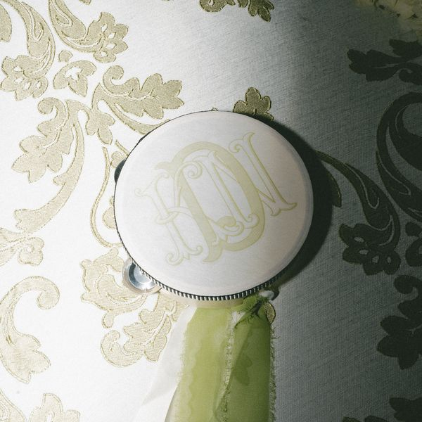
Primary — Madeline Damask Kiwi (in action)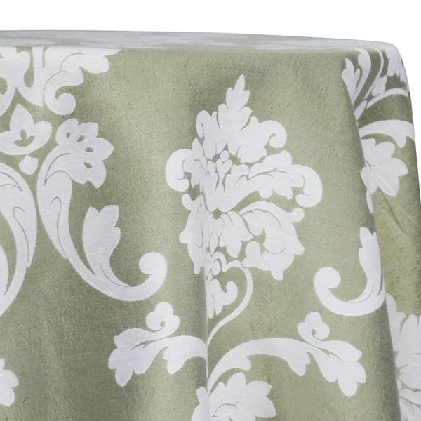
Alt — Madeline Kiwi swatchFrom "In Action" — Green Trellis napkin place settings.
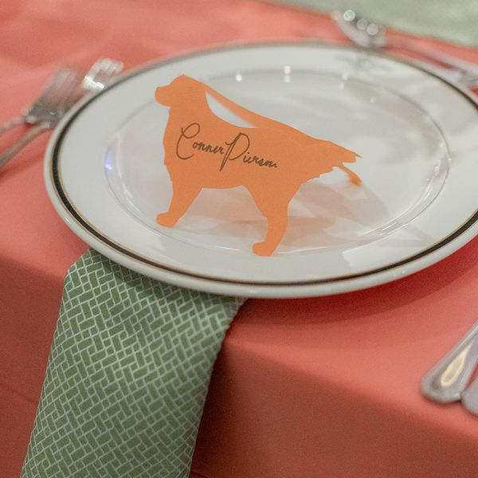
Primary — Green Trellis close-up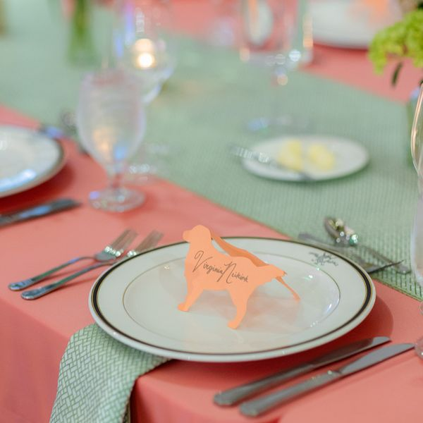
Alt — wider place settingChargers folder has ONE photo (Sponge Champagne). Alt borrowed from Dining-Tabletop, but it's dark.
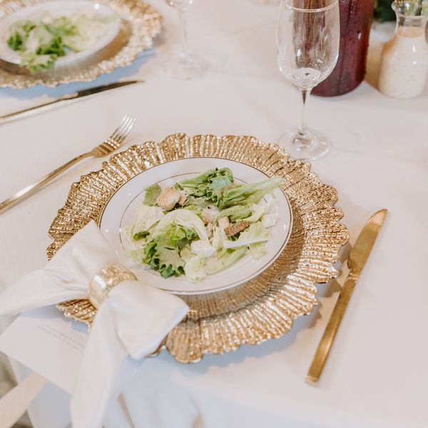
Primary — Sponge Champagne charger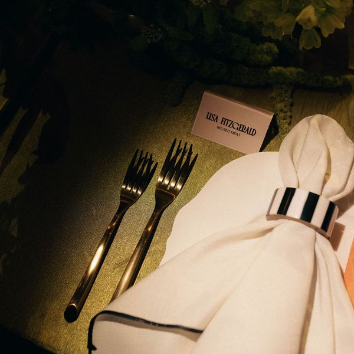
Alt — Gold Arezzo flatware (dark)Client folder is "Chairs" (Chiavari, Ghost, barstools) — no chair COVERS delivered. Suggest relabeling the circle "Chairs".
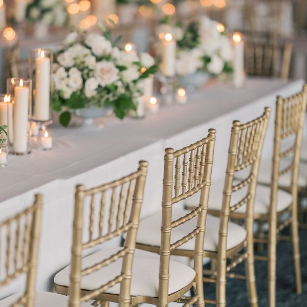
Primary — Gold Chiavari at table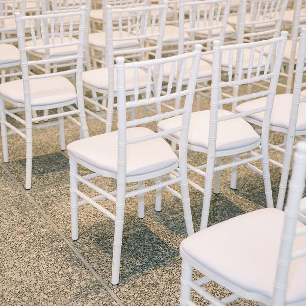
Alt — White Chiavari rows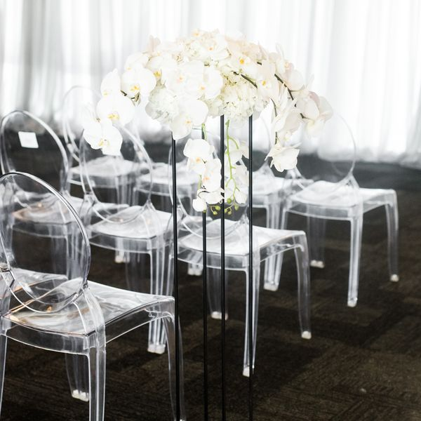
Alt — Ghost chairsTables folder — real-event reception shots.
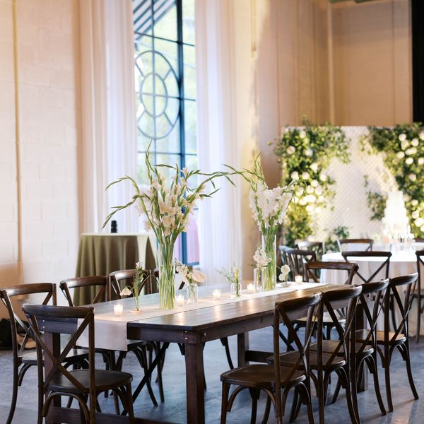
Primary — wood cross-back reception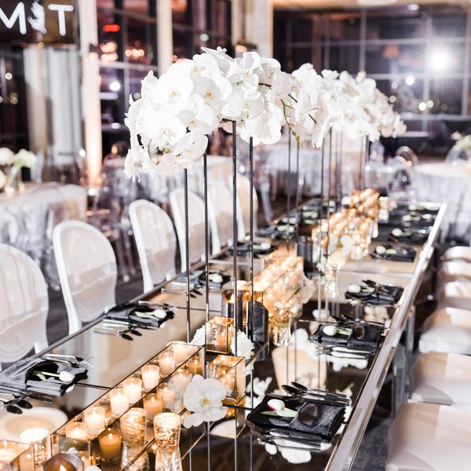
Alt — mirrored estate tableFrom "In Action" — Damasco Shell + Green Trellis runners.
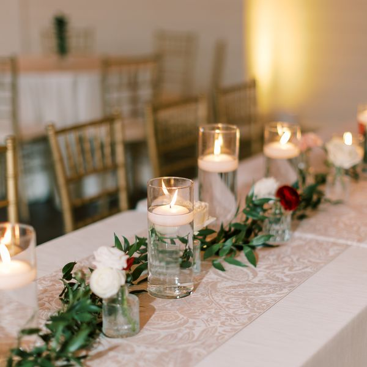
Primary — Damasco Shell w/ candles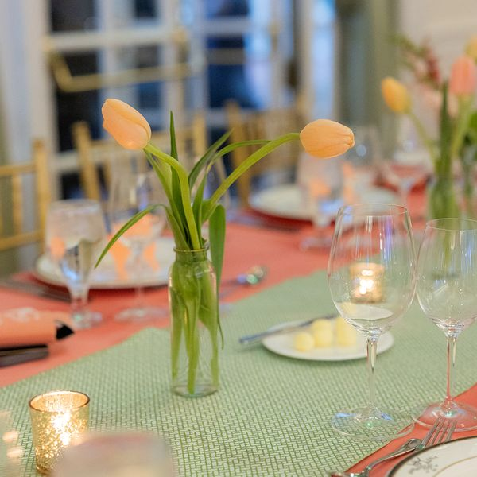
Alt — Green Trellis w/ tulipsNothing labeled "overlay" was delivered. Best stand-ins from linens-in-action below — or ask the client for one overlay shot.
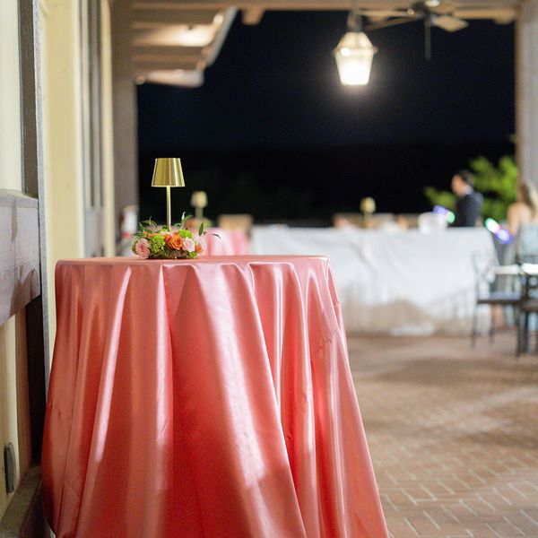
Stand-in — Fiesta Lamour cocktail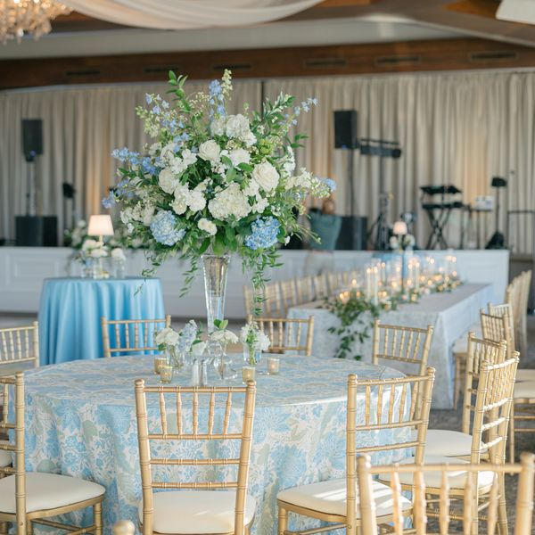
Stand-in — Panama Sage / Lt Blue ChloeDraping folder — Burgundy Velvet + York Pear.
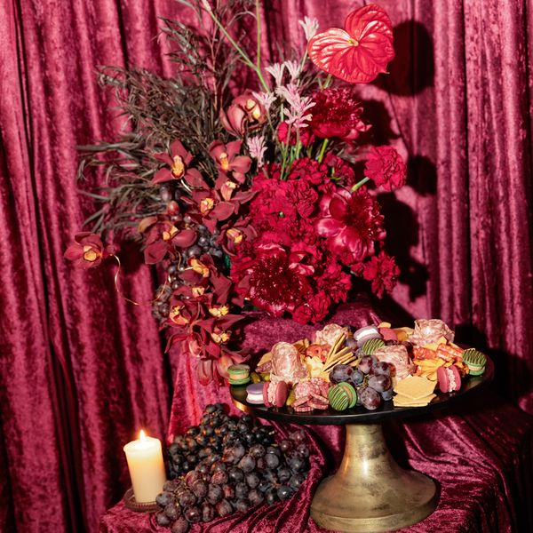
Primary — Burgundy Velvet backdrop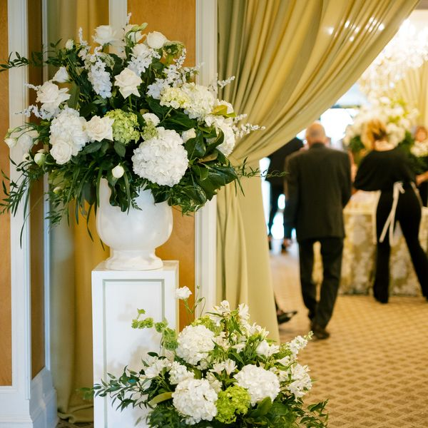
Alt — York Pear (busier)No sash photos in any delivered folder. Request from client, or retire the circle if sashes fold into Specialty.
From the 108-swatch Specialty Linen library — two of the showiest.
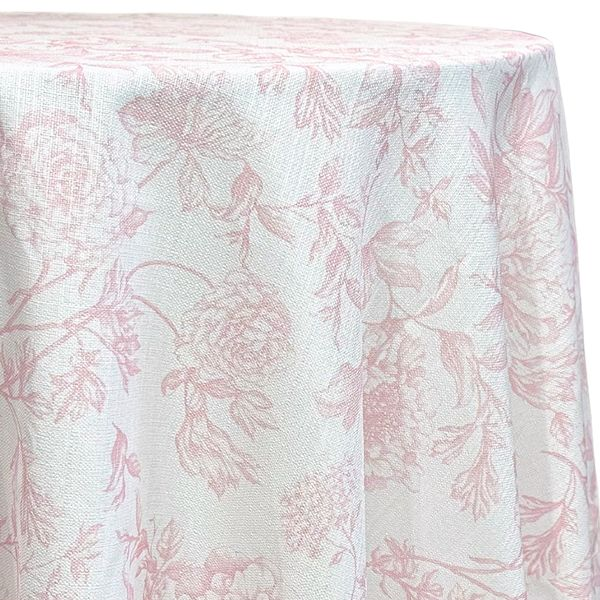
Primary — Bloom Dusty Rose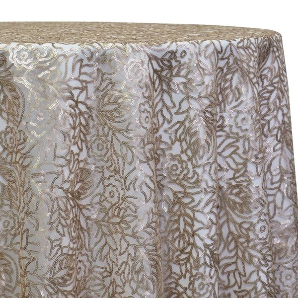
Alt — Fiori Lace ChampagneLighting folder — replaces the current stand-in photo on home.
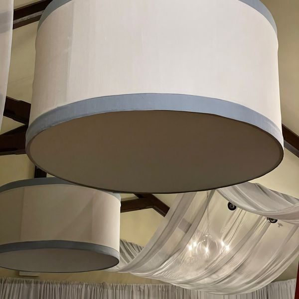
Primary — custom drum shades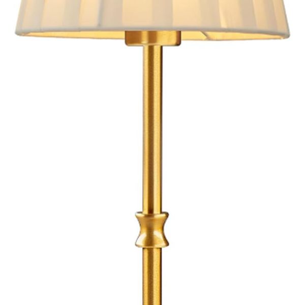
Alt — rechargeable lamp, goldNo tent folder in the delivery — home still uses a stand-in. Request tent photos from client.
Taxonomy check
The client's folders lean hard-goods (bars, staging, dance floors) while the home circles lean linens (napkins, sashes, overlays). If the grid should mirror how they merchandise, these six are candidates for circles of their own — worth a conversation before we lock.
Shop — "By event" chooser
Current line icons from shop.js at display size, with one refined alternative each
(24×24, stroke 1.7, round caps — matching the About page "difference" icon style). No code changed yet.
Interlocked bands say "wedding" faster than a bare heart (heart doubles with Nonprofit today).
Award rosette carries "gala / awards night"; the briefcase reads office, not event.
Confetti popper says party; the current mark scans as a house or pennant.
Classic shower umbrella — instantly legible for bridal and baby both.
Awareness ribbon frees the heart shape and reads fundraiser / benefit at a glance.